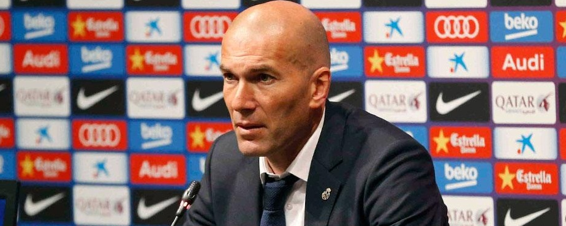

Interview With Zinedine Zidane

"We've invested a huge exertion and I leave far from here extremely cheerful for the fans and the team"
02/04/2016|Alberto Navarro
Zinedine Zidane communicated his fulfillment in the repercussions of Real Madrid's win at the Camp Nou. The Whites' mentor took to the media room and thought about the amusement in the accompanying terms: I'm extremely content with everything. We battled a bit at first, yet I leave far from here cheerful for our fans and for the group since it is difficult to win here. I loved everything about my players' execution. We invested an enormous exertion and I was satisfied with everything.
When I see a group that is joined together and all together, with everybody battling for their colleagues and for the team, there's nothing better. Coming into the excitement, we realised that we would need to buckle down and be all around arranged for it. We put in a decent execution, we have to be focused and we now need to rest and begin considering the Wolfsburg match since it's essential for us as we hope to continue what we've begun.
Second-half show
In football you wound up experiencing it all, you experience both great and awful spells. We didn't get off to such a decent begin, however it's ideal to have had a troublesome begin and afterward complete emphatically, as we did.
Fight for La Liga title still on?
We're seven points behind and we have to concentrate on the match to follow, which is in the Champions League and after it we'll return to contemplating grabbing three points in La Liga. We simply need to concentrate on winning our next game".
Fine form
We proceed in the same vein. We put in a decent execution against Sevilla at home and we proceed with our preparations for the upcoming. We know exactly how essential the Champions League is and we need to advance. Getting a win here is intense and few times oversee it. I'm cheerful for the players and the fans, who can be pleased with the players.
We're making things stride by-step. Above all else we need to overtake Atletico and it's as basic as that. After that, we'll need to see. There are still games to be played and we'll see. Winning here is an enormous prize for the majority of the players. They conveyed a fantastic execution.
A morale booster
Yes, that is true. It's vital to have the win here consequently and for the rest of the season and with it coming just before our Champions League game in Germany. I now need the majority of the players to rest up well in light of the fact that there aren't numerous days prior to the following match furthermore given the hour and a half they've quite recently put in.
I leave far from here cheerful for our fans and for the group since it is difficult to win here.I loved everything about my players' execution. We invested an enormous exertion and I was satisfied with everything.
When I see a group that is joined together and all together, with everybody battling for their colleagues and for the team, there's nothing better.
Great fitness levels
When you get the equalizer it gives you a support physically and we finished the game emphatically, yet we've now got the chance to rest up and this is what it will resemble until the end of the season.
Bale's Disallowed Goal
I'm satisfied to have won here in light of the fact that it is difficult. Few teams will leave far from here having won. I imagine that Bale's objective ought to have stood, yet I haven't seen it.
Casemiro in the match
He played an indispensable part, as they all did. I can't single out any player specifically. The players who got the objectives are dependably the unequivocal ones and that is a reward, yet protectively we performed fantastically against players who needn't bother with much space to hurt you, that was something we managed well.